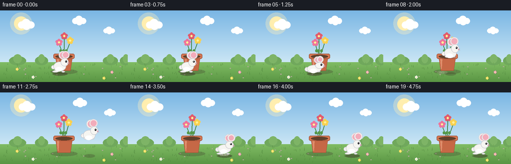
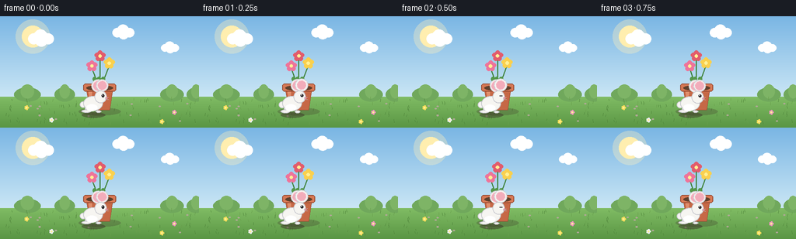

CODING AGENTS AS PIXEL WORLD MODELS
traex/Seed-2.1-Pro-0915 · dynamic_spatial_relationship_0021
点击播放 · 原生 RGB 像素
逐轮保存的候选
回放视频、检查图与代码变化。
每份候选均可单独播放。实际图片检查记录在下方工具轨迹中。
候选 01播放与检查图
点击播放 · 原生 RGB 像素


展开代码变化
--- 上一保存版本
+++ 本次保存版本
@@ -0,0 +1,366 @@
+#!/usr/bin/env python3
+"""Text-to-video: a rabbit in front of a flowerpot jumps to its right.
+
+Pure PIL/numpy procedural rendering, 2x supersampled for anti-aliasing.
+Produces 20 RGB frames at 256x144, 4 fps and saves them via artifact_io.
+"""
+import math
+from pathlib import Path
+
+import numpy as np
+from PIL import Image, ImageDraw
+
+import artifact_io
+
+W, H, N, FPS = 256, 144, 20, 4.0
+SS = 2 # supersampling factor
+SW, SH = W * SS, H * SS
+HORIZON = 104 # ground line in 1x coordinates
+CASE_DIR = Path(__file__).resolve().parent
+
+POT_CX = 128
+RABBIT_X0, RABBIT_X1 = 120, 194
+GROUND_Y = 126 # rabbit feet position
+
+# ---------------------------------------------------------------- geometry
+
+
+def sc(v):
+ return int(round(v * SS))
+
+
+def ellipse(d, box, fill=None, outline=None, width=1):
+ d.ellipse([sc(box[0]), sc(box[1]), sc(box[2]), sc(box[3])],
+ fill=fill, outline=outline, width=max(1, sc(width)))
+
+
+def rrect(d, box, radius, fill=None, outline=None, width=1):
+ d.rounded_rectangle([sc(box[0]), sc(box[1]), sc(box[2]), sc(box[3])],
+ radius=sc(radius), fill=fill, outline=outline,
+ width=max(1, sc(width)))
+
+
+def line(d, pts, fill, width=1):
+ d.line([(sc(x), sc(y)) for x, y in pts], fill=fill,
+ width=max(1, sc(width)), joint="curve")
+
+
+def polygon(d, pts, fill=None, outline=None):
+ d.polygon([(sc(x), sc(y)) for x, y in pts], fill=fill, outline=outline)
+
+
+def soft_ellipse(img, cx, cy, rx, ry, color, alpha):
+ """Alpha-blended ellipse via a temporary layer."""
+ layer = Image.new("RGBA", (SW, SH), (0, 0, 0, 0))
+ ld = ImageDraw.Draw(layer)
+ ld.ellipse([sc(cx - rx), sc(cy - ry), sc(cx + rx), sc(cy + ry)],
+ fill=color + (alpha,))
+ img.alpha_composite(layer)
+
+
+def rotated_ellipse(img, cx, cy, rx, ry, tilt_deg, fill, outline=None):
+ """tilt_deg > 0 tilts the long (vertical) axis toward the right."""
+ pad = sc(max(rx, ry)) + 4
+ layer = Image.new("RGBA", (pad * 2, pad * 2), (0, 0, 0, 0))
+ ld = ImageDraw.Draw(layer)
+ ld.ellipse([2, 2, pad * 2 - 3, pad * 2 - 3], fill=fill, outline=outline,
+ width=max(1, sc(0.8)))
+ layer = layer.rotate(-tilt_deg, resample=Image.BICUBIC, expand=True)
+ img.paste(layer, (sc(cx) - layer.width // 2, sc(cy) - layer.height // 2),
+ layer)
+
+
+# ---------------------------------------------------------------- background
+
+
+def build_background():
+ arr = np.zeros((SH, SW, 3), dtype=np.uint8)
+ sky_top = np.array([122, 182, 228])
+ sky_bot = np.array([202, 230, 245])
+ grass_top = np.array([128, 188, 100])
+ grass_bot = np.array([90, 150, 68])
+ hz = sc(HORIZON)
+ for y in range(SH):
+ if y < hz:
+ t = y / max(1, hz - 1)
+ arr[y, :] = (sky_top + (sky_bot - sky_top) * t).astype(np.uint8)
+ else:
+ t = (y - hz) / max(1, SH - hz - 1)
+ arr[y, :] = (grass_top + (grass_bot - grass_top) * t).astype(np.uint8)
+ img = Image.fromarray(arr, "RGB").convert("RGBA")
+ d = ImageDraw.Draw(img)
+
+ # sun with soft glow
+ soft_ellipse(img, 42, 26, 22, 22, (255, 240, 190), 90)
+ ellipse(d, (28, 12, 56, 40), fill=(255, 238, 175))
+
+ # distant bushes along the horizon
+ for bx, bw in [(18, 34), (70, 26), (206, 30), (240, 24)]:
+ ellipse(d, (bx, HORIZON - 12, bx + bw, HORIZON + 6),
+ fill=(112, 168, 92))
+ ellipse(d, (bx + bw * 0.25, HORIZON - 16, bx + bw * 0.75, HORIZON + 2),
+ fill=(126, 180, 102))
+
+ # static ground texture: grass blades, pebbles, tiny wild flowers
+ rng = np.random.default_rng(7)
+ for _ in range(110):
+ x = rng.uniform(4, W - 4)
+ y = rng.uniform(HORIZON + 4, H - 3)
+ h = rng.uniform(2, 4.5)
+ c = (78, 132, 58) if rng.random() < 0.6 else (104, 158, 76)
+ line(d, [(x, y), (x + rng.uniform(-1, 1), y - h)], c, width=0.7)
+ for _ in range(14):
+ x = rng.uniform(6, W - 6)
+ y = rng.uniform(HORIZON + 8, H - 6)
+ ellipse(d, (x - 1.2, y - 0.8, x + 1.2, y + 0.8),
+ fill=(176, 168, 150))
+ for fx, fy, col in [(34, 118, (245, 220, 90)), (224, 124, (238, 150, 190)),
+ (66, 134, (240, 240, 250)), (208, 136, (245, 220, 90))]:
+ for a in range(5):
+ ang = a * (2 * math.pi / 5)
+ ellipse(d, (fx + 1.8 * math.cos(ang) - 1.1,
+ fy + 1.8 * math.sin(ang) - 1.1,
+ fx + 1.8 * math.cos(ang) + 1.1,
+ fy + 1.8 * math.sin(ang) + 1.1), fill=col)
+ ellipse(d, (fx - 0.9, fy - 0.9, fx + 0.9, fy + 0.9),
+ fill=(255, 240, 150))
+ return img
+
+
+CLOUDS = [(52, 28, 1.0), (158, 20, 0.85), (218, 40, 0.7)]
+
+
+def draw_clouds(img, frame):
+ d = ImageDraw.Draw(img)
+ for cx, cy, scale in CLOUDS:
+ x = cx + frame * 0.15
+ for dx, dy, r in [(-9, 1, 7), (0, -2, 9), (10, 1, 7), (1, 3, 8)]:
+ ellipse(d, (x + (dx - r) * scale, cy + (dy - r) * scale,
+ x + (dx + r) * scale, cy + (dy + r) * scale),
+ fill=(255, 255, 255, 235))
+
+
+# ---------------------------------------------------------------- flowerpot
+
+FLOWER_HEADS = [
+ ((118, 64), (238, 116, 154), 0.0),
+ ((139, 60), (250, 208, 78), 1.4),
+ ((128, 51), (226, 92, 108), 2.7),
+]
+
+
+def draw_blossom(d, hx, hy, color):
+ for a in range(5):
+ ang = a * (2 * math.pi / 5) - math.pi / 2
+ px, py = hx + 4.2 * math.cos(ang), hy + 4.2 * math.sin(ang)
+ ellipse(d, (px - 3, py - 3, px + 3, py + 3), fill=color)
+ ellipse(d, (hx - 2.1, hy - 2.1, hx + 2.1, hy + 2.1),
+ fill=(255, 240, 150))
+
+
+def draw_pot(img, frame):
+ d = ImageDraw.Draw(img)
+ # static contact shadow
+ soft_ellipse(img, POT_CX, 123, 27, 5, (60, 50, 40), 70)
+
+ # stems, leaves and gently swaying flower heads
+ for (hx, hy), color, phase in FLOWER_HEADS:
+ sway = math.sin(frame * (2 * math.pi / N) + phase) * 1.3
+ hx2, hy2 = hx + sway, hy + abs(sway) * 0.3
+ line(d, [(POT_CX, 92), ((POT_CX + hx2) / 2, 80), (hx2, hy2 + 3)],
+ (64, 130, 60), width=1.4)
+ ellipse(d, ((POT_CX + hx2) / 2 - 4, 78, (POT_CX + hx2) / 2 + 1, 84),
+ fill=(84, 152, 74))
+ draw_blossom(d, hx2, hy2, color)
+
+ # pot body (trapezoid), rim and soil
+ polygon(d, [(111, 94), (145, 94), (141, 121), (115, 121)],
+ fill=(198, 104, 70), outline=(150, 72, 48))
+ polygon(d, [(114, 97), (118, 97), (117, 117), (115.5, 118)],
+ fill=(224, 142, 108))
+ rrect(d, (107, 87, 149, 97), 3, fill=(214, 120, 84),
+ outline=(150, 72, 48))
+ ellipse(d, (111, 89, 145, 96), fill=(96, 64, 44))
+
+
+# ---------------------------------------------------------------- rabbit
+
+FUR = (246, 245, 241)
+FUR_EDGE = (202, 202, 208)
+INNER_EAR = (242, 172, 186)
+EYE = (42, 40, 44)
+NOSE = (230, 138, 160)
+
+
+def draw_rabbit(img, p):
+ cx, base = p["cx"], p["base"]
+ sx, sy = p["sx"], p["sy"]
+
+ def T(x, y):
+ return cx + x * sx, base + y * sy
+
+ def E(x0, y0, x1, y1, fill, outline=FUR_EDGE, width=0.9):
+ a = T(x0, y0)
+ b = T(x1, y1)
+ d.ellipse([sc(a[0]), sc(a[1]), sc(b[0]), sc(b[1])],
+ fill=fill, outline=outline, width=max(1, sc(width)))
+
+ def ear(bx, by, length, width_, tilt):
+ ang = math.radians(tilt)
+ ecx = bx + math.sin(ang) * length / 2
+ ecy = by - math.cos(ang) * length / 2
+ ecx, ecy = T(ecx, ecy)
+ rotated_ellipse(img, ecx, ecy, width_ * sx / 2, length * sy / 2,
+ tilt, FUR, FUR_EDGE)
+ rotated_ellipse(img, ecx, ecy, width_ * sx / 2 - 1.1,
+ length * sy / 2 - 2.2, tilt, INNER_EAR, None)
+
+ d = ImageDraw.Draw(img)
+
+ # ears first (behind head/body)
+ ear(7, -28.5, 15, 4.6, p["tilt_back"])
+ ear(11, -29.5, 14.5, 4.4, p["tilt_front"])
+
+ # tail
+ tx, ty = T(-13.5, -12)
+ ellipse(d, (tx - 4.2, ty - 4.2, tx + 4.2, ty + 4.2), fill=FUR,
+ outline=FUR_EDGE)
+
+ # legs / feet
+ if p["legs"] in ("tuck", "crouch"):
+ E(-10, -13, -1, -5, FUR) # folded thigh
+ E(-12, -9, -3, -4.5, FUR) # back foot tucked
+ E(3, -8.5, 10, -5, FUR) # front foot tucked
+ elif p["legs"] == "land":
+ E(-11, -9, -1, -3.5, FUR)
+ E(-15, -5.5, -3, -1.5, FUR) # back foot forward
+ E(4, -4.5, 12, -1.5, FUR) # front foot forward
+ else:
+ E(-11, -11, -2, -4, FUR) # thigh
+ E(-15, -5.5, -3, -1.5, FUR) # back foot
+ E(3, -4.5, 10, -1.5, FUR) # front foot
+
+ # body
+ E(-13, -23, 12, -4, FUR)
+ # fluffy cheek of the belly
+ bx, by = T(-2, -8)
+ ellipse(d, (bx - 7, by - 4.5, bx + 7, by + 4.5), fill=(255, 255, 255))
+
+ # head
+ E(1.5, -30, 17, -14, FUR)
+
+ # face
+ ex, ey = T(12.2, -23.6)
+ if p["blink"]:
+ a = T(10.4, -23.6)
+ b = T(13.8, -23.6)
+ line(d, [a, b], EYE, width=1.2)
+ else:
+ ellipse(d, (ex - 1.7, ey - 1.9, ex + 1.7, ey + 1.9), fill=EYE)
+ ellipse(d, (ex - 0.9, ey - 1.1, ex - 0.2, ey - 0.4),
+ fill=(255, 255, 255))
+ nx, ny = T(16.8, -20.4)
+ ellipse(d, (nx - 1.2, ny - 1, nx + 1.2, ny + 1), fill=NOSE)
+ a = T(15.2, -19.2)
+ line(d, [a, T(19.5, -18.4)], (180, 180, 188), width=0.7)
+ line(d, [T(15.2, -20.2), T(19.5, -21.2)], (180, 180, 188), width=0.7)
+
+
+# ---------------------------------------------------------------- choreography
+
+
+def pose_for(frame):
+ sway = math.sin(frame * 0.9) * 4
+ if frame <= 4:
+ return dict(cx=RABBIT_X0,
+ base=GROUND_Y + math.sin(frame * 0.9) * 0.4,
+ sx=1.0, sy=1.0 + 0.02 * math.sin(frame * 1.2),
+ legs="idle", tilt_back=-6 + sway,
+ tilt_front=5 + sway * 0.8, blink=(frame == 2),
+ lift=0.0)
+ if frame == 5: # anticipatory crouch
+ return dict(cx=RABBIT_X0 - 2, base=GROUND_Y + 2, sx=1.14, sy=0.8,
+ legs="crouch", tilt_back=-14, tilt_front=-6,
+ blink=False, lift=0.0)
+ if 6 <= frame <= 13:
+ p = (frame - 6) / 7
+ ease = p * p * (3 - 2 * p)
+ cx = RABBIT_X0 + (RABBIT_X1 - RABBIT_X0) * ease
+ lift = 34 * math.sin(math.pi * p)
+ if frame == 6:
+ sx, sy, legs = 0.92, 1.14, "tuck"
+ elif frame == 12:
+ sx, sy, legs = 0.96, 1.06, "tuck"
+ elif frame == 13:
+ sx, sy, legs = 1.16, 0.78, "land"
+ else:
+ sx, sy, legs = 0.98, 1.04, "tuck"
+ return dict(cx=cx, base=GROUND_Y - lift, sx=sx, sy=sy, legs=legs,
+ tilt_back=-30 + 6 * math.sin(frame * 2.2),
+ tilt_front=-24 + 6 * math.sin(frame * 2.2 + 1),
+ blink=False, lift=lift)
+ k = frame - 14
+ flop = 10 if k == 0 else (4 if k == 1 else sway)
+ return dict(cx=RABBIT_X1, base=GROUND_Y,
+ sx=1.06 if k == 0 else 1.0,
+ sy=0.94 if k == 0 else 1.0 + 0.02 * math.sin(k * 1.1),
+ legs="idle", tilt_back=-6 + flop,
+ tilt_front=5 + flop * 0.8, blink=(frame == 17), lift=0.0)
+
+
+def draw_shadow(img, pose):
+ norm = pose["lift"] / 34.0
+ rx = 15 * (1 - 0.35 * norm)
+ alpha = int(120 * (1 - 0.55 * norm))
+ soft_ellipse(img, pose["cx"], GROUND_Y + 1.5, rx, 3.4,
+ (58, 48, 38), alpha)
+
+
+def draw_dust(img, frame, pose):
+ # takeoff puffs around frames 6-8, landing puffs around 13-15
+ if frame in (6, 7, 8):
+ age = frame - 6
+ x0 = RABBIT_X0
+ elif frame in (13, 14, 15):
+ age = frame - 13
+ x0 = RABBIT_X1
+ else:
+ return
+ radius = 2.5 + age * 1.6
+ alpha = max(0, 150 - age * 55)
+ for j, dx in enumerate((-5, 0, 5)):
+ soft_ellipse(img, x0 + dx - age * 1.5, GROUND_Y - age * 0.8,
+ radius * (0.8 + 0.15 * j), radius * 0.55,
+ (214, 208, 196), alpha)
+
+
+# ---------------------------------------------------------------- render
+
+
+def render():
+ background = build_background()
+ frames = []
+ for f in range(N):
+ img = background.copy()
+ draw_clouds(img, f)
+ draw_pot(img, f)
+ pose = pose_for(f)
+ draw_shadow(img, pose)
+ draw_dust(img, f, pose)
+ draw_rabbit(img, pose)
+ small = img.convert("RGB").resize((W, H), Image.LANCZOS)
+ frames.append(np.asarray(small, dtype=np.uint8))
+ return np.stack(frames, axis=0)
+
+
+def main():
+ frames = render()
+ assert frames.shape == (N, H, W, 3) and frames.dtype == np.uint8
+ artifact_io.save(frames, CASE_DIR)
+ movement = np.abs(frames[1:].astype(int) - frames[:-1].astype(int)).mean()
+ print(f"saved {N} frames {W}x{H} to {CASE_DIR}")
+ print(f"mean per-frame pixel change: {movement:.2f}")
+
+
+if __name__ == "__main__":
+ main()
可观测工具轨迹
实际执行的命令与返回图片。
命令 1exit 0
/bin/bash -lc 'cat prompt.txt GENERATION_RULES.md task_spec.json 2>/dev/null; ls -la'
命令 2exit 0
/bin/bash -lc 'cat artifact_io.py'
命令 3exit 0
/bin/bash -lc 'cd "$(pwd)" && python generate.py && ls -la frames | head -25'
命令 4exit 0
/bin/bash -lc "python - <<'EOF'
import numpy as np
from PIL import Image
def fur_bbox(path):
a = np.asarray(Image.open(path).convert(\"RGB\")).astype(int)
lower = a[85:]
r,g,b = lower[...,0], lower[...,1], lower[...,2]
mask = (r>225)&(g>225)&(b>220) # white fur / belly
ys, xs = np.nonzero(mask)
if len(xs)==0: return None
return xs.min(), xs.max(), ys.min()+85, ys.max()+85, mask.sum()
for i in [0,2,4,5,6,8,10,12,13,14,16,19]:
bb = fur_bbox(f\"frames/{i:02d}.png\")
print(f\"frame {i:02d}: x[{bb[0]:3d},{bb[1]:3d}] y[{bb[2]:3d},{bb[3]:3d}] px={bb[4]:4d} \"
+ (\"in front of/over pot\" if bb[0] < 145 and bb[1] > 110 else
(\"right of pot\" if bb[0] >= 145 else \"left/other\")))
# artifact check
import os
for name in [\"pixels.npz\",\"index.html\",\"inspection.png\",\"transition_check.png\"]:
print(name, os.path.exists(name), os.path.getsize(name) if os.path.exists(name) else \"\")
d = np.load(\"pixels.npz\")
t = d[\"pixels\"]
print(\"tensor shape:\", t.shape, \"dtype:\", t.dtype)
frames = np.stack([((t>>16)&255), ((t>>8)&255), (t&255)], axis=-1)
print(\"reconstructed frames:\", frames.shape)
print(\"frame0 mean color:\", frames[0].mean(axis=(0,1)).round(1))
print(\"unique pixel values frame0:\", len(np.unique(frames[0].reshape(-1,3), axis=0)))
EOF"命令 5exit 0
/bin/bash -lc "python - <<'EOF'
import numpy as np
from PIL import Image
# proper reconstruction: (H,W,T) -> (T,H,W,3)
t = np.load(\"pixels.npz\")[\"pixels\"]
rgb = np.stack([((t>>16)&255), ((t>>8)&255), (t&255)], axis=-1) # H,W,T,3
frames = np.transpose(rgb, (2,0,1,3))
print(\"frames:\", frames.shape, \"unique colors frame0:\", len(np.unique(frames[0].reshape(-1,3), axis=0)))
def rabbit_x(path):
a = np.asarray(Image.open(path).convert(\"RGB\")).astype(int)
region = a[100:] # ground band only, excludes clouds/blossoms
r,g,b = region[...,0], region[...,1], region[...,2]
mask = (r>225)&(g>225)&(b>220)
col_counts = mask.sum(axis=0)
cols = np.nonzero(col_counts>2)[0]
return (cols.min(), cols.max()) if len(cols) else None
for i in range(20):
print(i, rabbit_x(f\"frames/{i:02d}.png\"))
EOF"命令 6exit 0
/bin/bash -lc "python - <<'EOF'
import numpy as np
from PIL import Image
for i in range(20):
a = np.asarray(Image.open(f\"frames/{i:02d}.png\").convert(\"RGB\")).astype(int)
region = a[100:, 75:] # exclude the small white wildflower at x~66
r,g,b = region[...,0], region[...,1], region[...,2]
mask = (r>225)&(g>225)&(b>220)
cols = np.nonzero(mask.sum(axis=0)>2)[0]
if len(cols):
lo, hi = cols.min()+75, cols.max()+75
relation = \"in front of pot\" if hi <= 150 else (\"right of pot\" if lo >= 150 else \"crossing\")
print(f\"{i:02d} x[{lo:3d},{hi:3d}] {relation}\")
else:
print(f\"{i:02d} airborne (no fur in ground band)\")
EOF"命令 7exit 1
/bin/bash -lc "python - <<'EOF'
import numpy as np
from PIL import Image
# airborne check: highest fur pixel should rise well above ground
for i in [0, 8, 9, 10, 11, 13]:
a = np.asarray(Image.open(f\"frames/{i:02d}.png\").convert(\"RGB\")).astype(int)
r,g,b = a[...,0], a[...,1], a[...,2]
mask = (r>225)&(g>225)&(b>220)
ys, xs = np.nonzero(mask)
keep = xs > 90 # drop wildflower
print(f\"frame {i:02d}: topmost fur y = {ys[keep].min()}, fur pixels = {keep.sum()}\")
EOF
md5sum pixels.npz > /tmp/before.md5 && python generate.py && md5sum -c /tmp/before.md5 && ls frames | wc -l"命令 8exit 0
/bin/bash -lc "python - <<'EOF'
import numpy as np
from PIL import Image
for i in [0, 8, 9, 10, 11, 13, 19]:
a = np.asarray(Image.open(f\"frames/{i:02d}.png\").convert(\"RGB\")).astype(int)
r,g,b = a[...,0], a[...,1], a[...,2]
mask = (r>225)&(g>225)&(b>220)
ys, xs = np.nonzero(mask)
keep = (xs > 90) & (ys > 50) # rabbit only: right of wildflower, below sky
yy, xx = ys[keep], xs[keep]
print(f\"frame {i:02d}: fur x[{xx.min():3d},{xx.max():3d}] y[{yy.min():3d},{yy.max():3d}]\")
EOF
mkdir -p .tmp && md5sum pixels.npz > .tmp/before.md5 && python generate.py && md5sum -c .tmp/before.md5"保存候选 1 份；完成命令 8 次；可验证图片返回 0 张。原始 API 响应与完整日志保留在本地。